スマホを出せないときでも、Apple Watch で株価の動きが分かるようにする手順です。専門知識は要りません。上から順番に進めてください。
「イラスト」と書いてある図は説明用の絵で、実際の画面とは細部が異なります。アプリ（watchStock）の画面は実際の画面です。GitHub と Cloudflare の画面は英語で表示されることがあるので、ボタンの名前には英語表示のときの例も添えています。
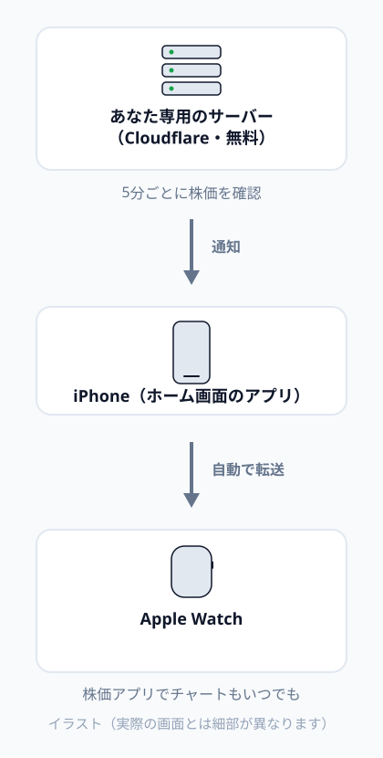
株価はおよそ 20 分遅れです。売買の判断はご自身の責任でお願いします。
| もの | 条件 |
|---|---|
| iPhone | iOS 16.4 以降。「設定」→「一般」→「情報」で確認できます |
| Apple Watch | iPhone とペアリング済み |
| メールアドレス | 2 つのサービスへの登録に使います。同じアドレスで構いません |
| 合言葉 | 自分で決めます。12 文字以上で、他人に推測されにくいもの（例: hanako-2026-kabu。この例はそのまま使わず、自分で考えてください）。紙などにメモしておいてください |
パソコンがあると、手順 3 を大きな画面で進められるので楽です。iPhone だけでもできます。
2 つの無料サービスに登録します。どちらも登録は無料で、このアプリの範囲では料金はかかりません。
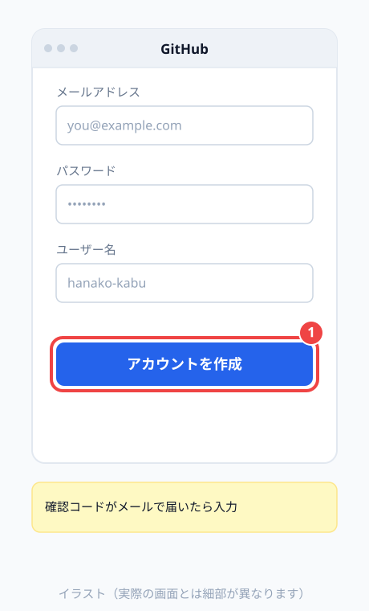
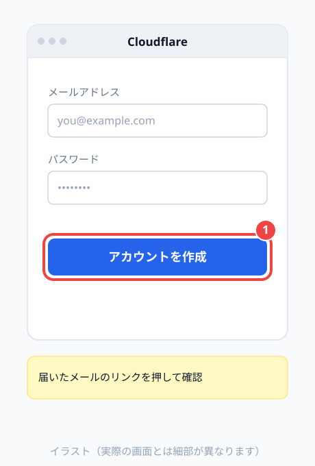
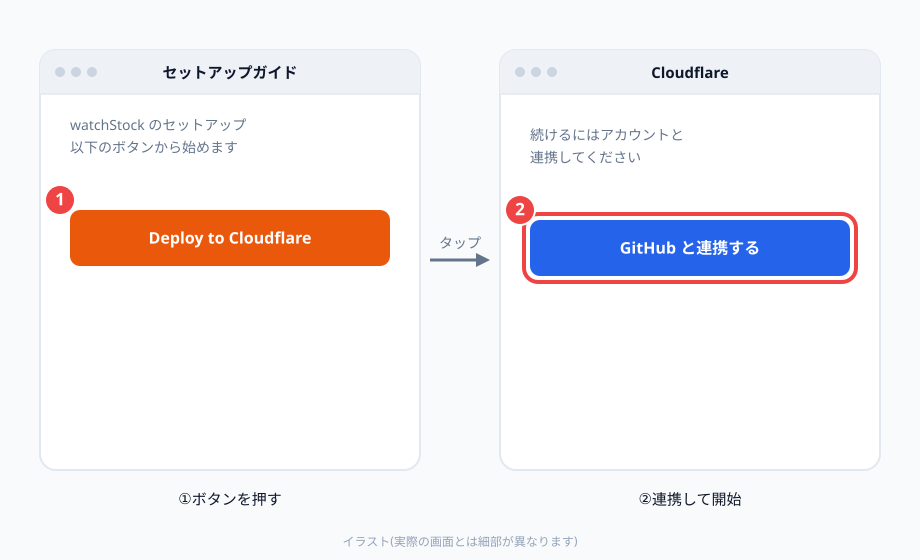
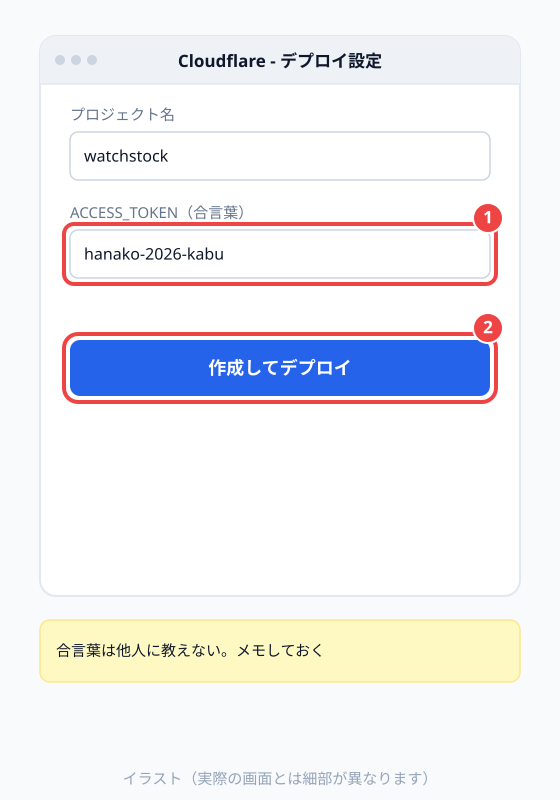
https://watchstock.〇〇〇.workers.dev という形の URL が表示されるので、この URL をメモしてください。これがあなた専用のアプリの住所です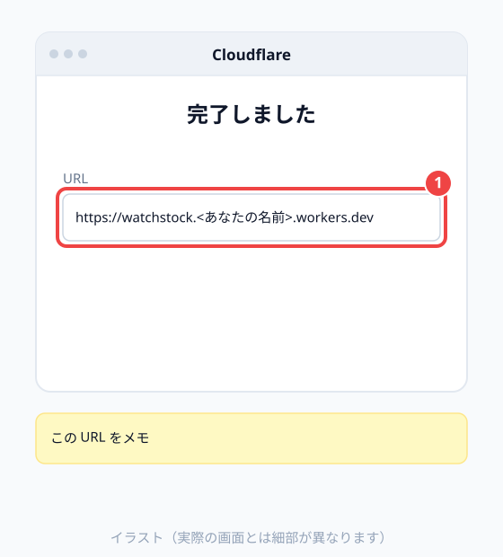
「workers.dev のサブドメイン」を決めるよう求められたら、好きな英数字（例: hanako-kabu）を入力してください。URL の「〇〇〇」の部分になります。決めた直後の数分間は URL を開いてもエラーになることがあります。少し待ってから開き直してください。
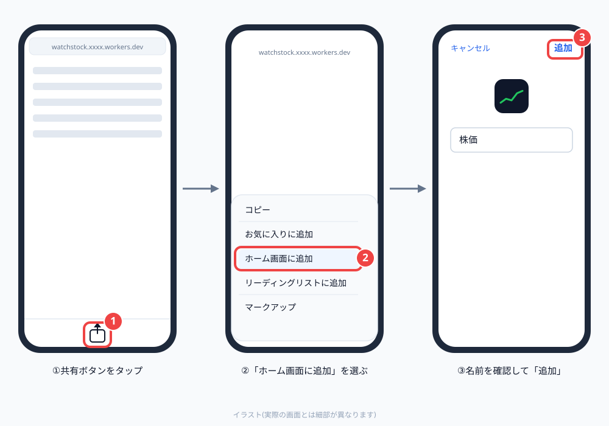
Safari で開いた時点では、下のような案内が出ます。ホーム画面に追加すれば消えます。
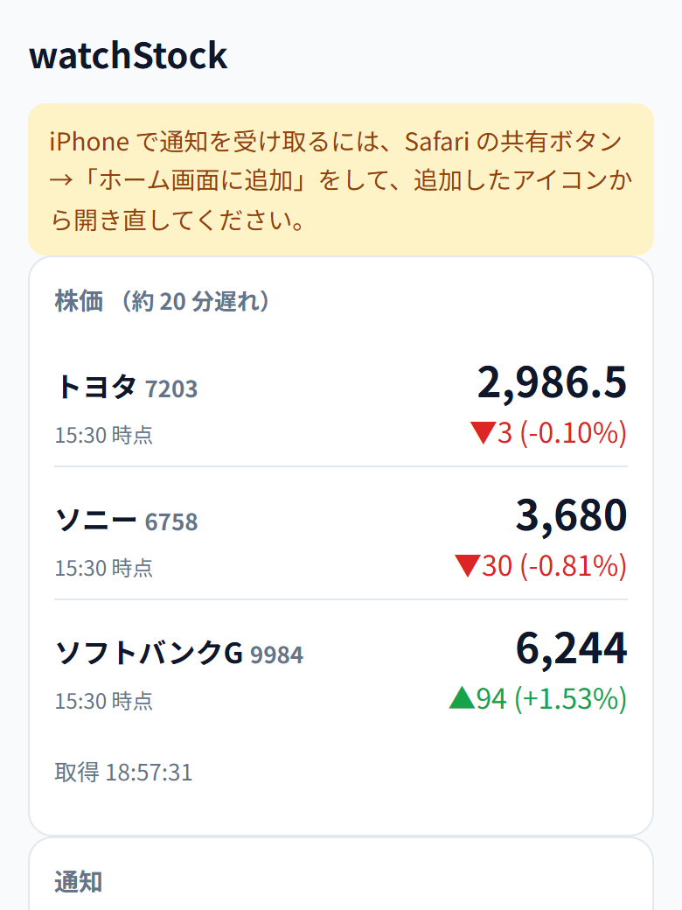
ホーム画面に「株価」というアイコンができます。必ずこのアイコンから開いてください。Safari から開くと通知を受け取れません。
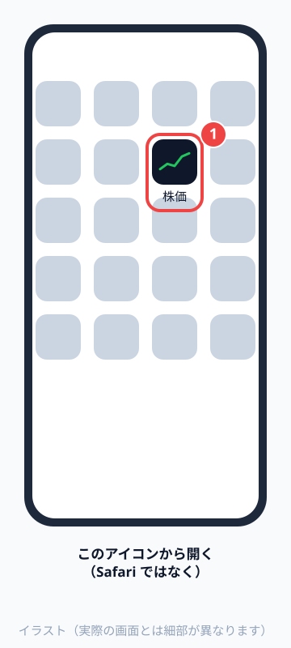
最初に合言葉を聞かれます。3-3 で決めた合言葉を入力して「はじめる」を押します。一度入れれば、次からは聞かれません。
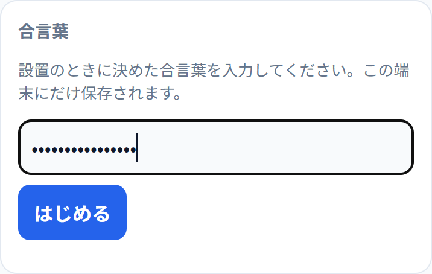
株価が表示されれば成功です。
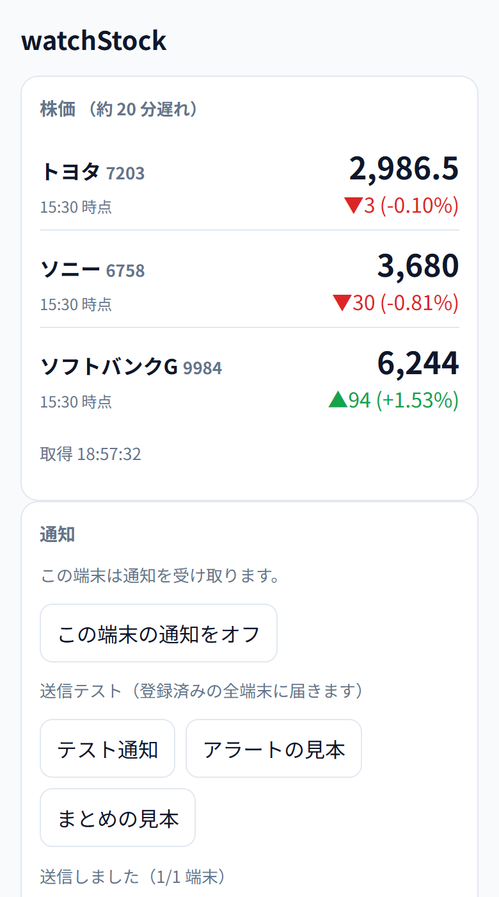
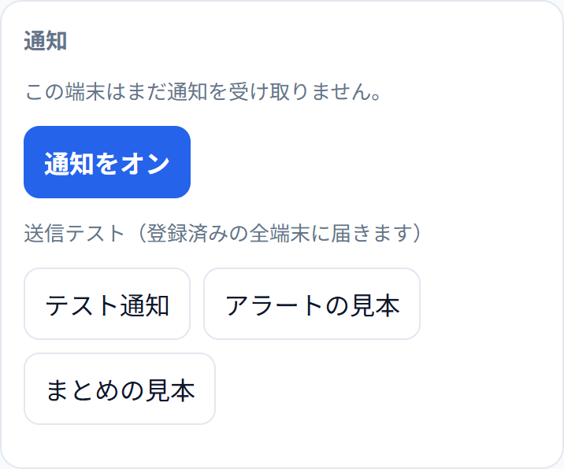
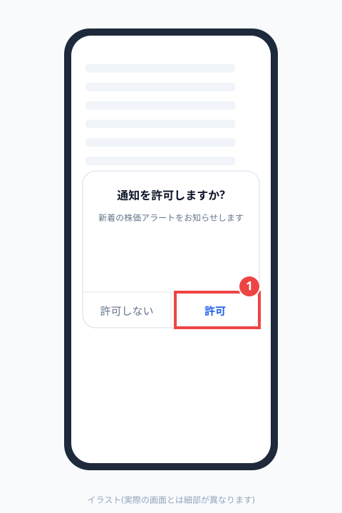
「テスト通知」を押します。数秒で iPhone に通知が届きます。「アラートの見本」「まとめの見本」を押すと、本番と同じ文面の通知を試せます。
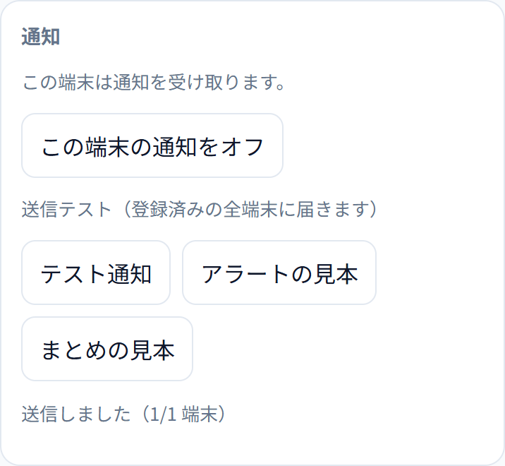
「テスト通知」を押したら、すぐに iPhone の画面を消して（横のボタンを 1 回押してロック）待ちます。数秒で Watch に通知が届けば完了です。
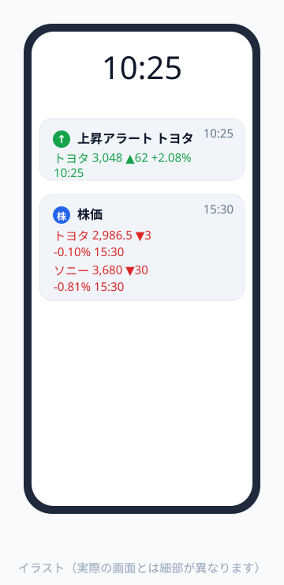
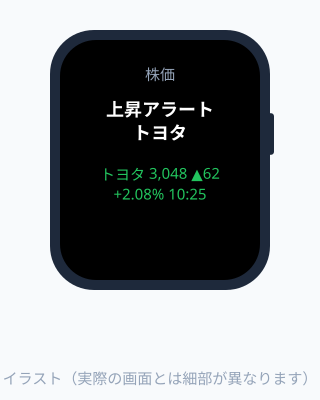
iPhone を手に持って画面がついているときは、通知は iPhone にだけ表示され、Watch には届きません。これは Apple Watch の仕組みです。
アプリを下に進むと「通知の設定」があります。変えたら「保存」を押してください。次の通知から反映されます。
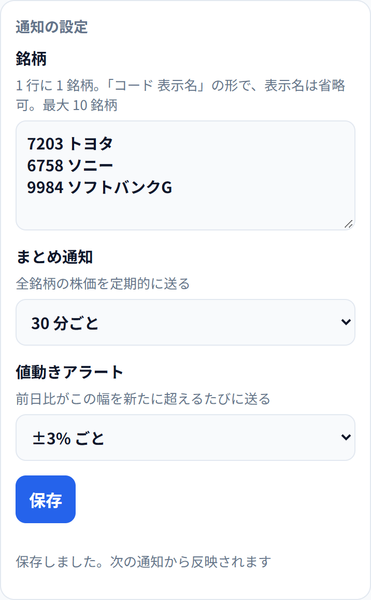
| 項目 | 書き方・選び方 |
|---|---|
| 銘柄 | 1 行に 1 銘柄。証券コード（4 桁）と表示したい名前をスペースで区切ります。例: 7203 トヨタ。最大 10 銘柄 |
| まとめ通知 | 全銘柄の株価をまとめて送る間隔。「送らない」も選べます |
| 値動きアラート | 前日比がこの幅を超えるたびに送ります。「±2% ごと」なら、+2%、+4%… と -2%、-4%… のときに届きます。同じ日に同じ段階では 1 回だけです |
証券コードが間違っていると、保存するときに「株価を取得できません」と表示されます。証券コードは、会社名と「株価」で検索すると見つかります。
通知が届くのは平日の 9:00〜16:00 です。土日祝日は届きません。
Apple Watch に最初から入っている「株価」アプリで、株価とチャートをいつでも見られます。
7203）を入力し、出てきた銘柄の「＋」を押してウォッチリストに追加します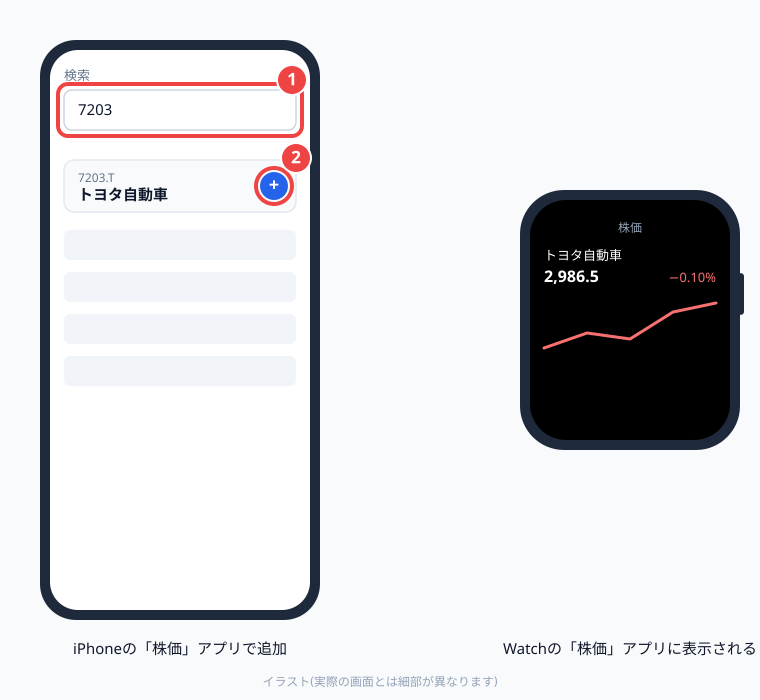
「株価」アプリの数字は Apple が提供しているもので、watchStock の通知の数字とは更新のタイミングが少しずれることがあります。
watchStock に登録した銘柄の株価を、文字盤のボタン 1 つで表示できます。
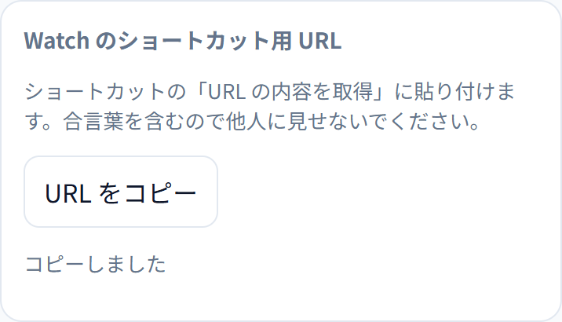
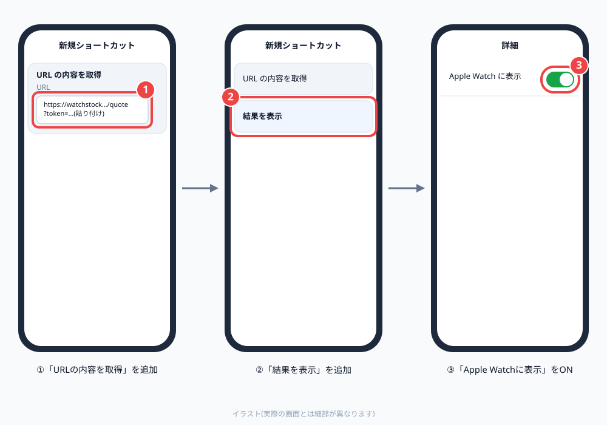
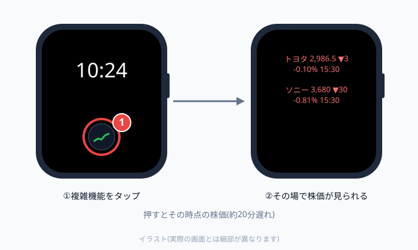
コピーした URL には合言葉が入っています。このショートカットは他人に共有しないでください。
Cloudflare にログインし、「Workers」の一覧から watchstock を選び、「設定」の「変数とシークレット」（英語表示なら Settings → Variables and Secrets）で ACCESS_TOKEN を新しい合言葉に変えてください。そのあと、アプリの「合言葉を消す」を押して、新しい合言葉を入れ直します。
約 20 分遅れの株価です。数字の横の時刻が、その株価の時刻です。
かかりません。GitHub と Cloudflare の無料の範囲で動きます。クレジットカードの登録も要りません。
新しい iPhone で「4. iPhone にアプリを入れる」からやり直してください。サーバーはそのまま使えます。
ホーム画面の「株価」アイコンを削除します。Cloudflare の「Workers」から watchstock を削除すると、サーバーも止まります。
詳しい人に設置を頼めます。この場合も、サーバーはあなたの Cloudflare アカウントに作ります。ほかの人のアカウントに作ってもらうと、その人があなたに株価を配ることになり、データ提供元の利用条件に触れるおそれがあるためです。
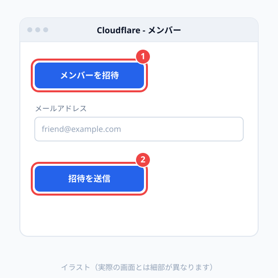